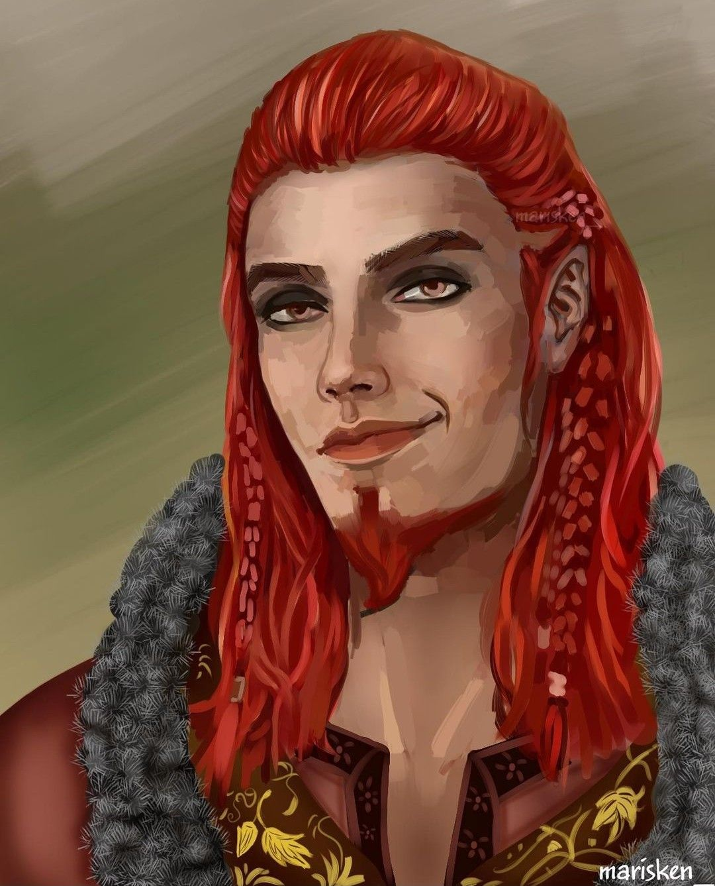

Великаны
Таков список ИНЕИСТОВЫХ ВЕЛИКАНОВ, которые были еще до асов. Считается, что все они умерли, кроме Бергельмира и его супруги, которые, в свою очередь, породили род Ётунов.: Бергельмир, Бестла (Бесла), Бёльторн, Имир, Скади, Тьяцци (Тиаци), Трудгельмир.
Ётуны, или йόтуны (др.-сканд. Jötunn — обжора) в германо-скандинавской мифологии, — великаны (турсы) семейства хримтурсов (инеистых великанов), правнуки Имира. Ётуны жили в Ётунхейме и Нифльхейме, отличались силой и ростом и были противниками асов и людей. С одной стороны, ётуны — это древние исполины, первые обитатели мира, по времени предшествующие богам и людям. С другой — это жители холодной каменистой страны на северной и восточной окраинах земли (Ётунхейм, Утгард), представители стихийных демонических природных сил, враги асов. Они во что бы то ни стало стремились отнять у последних жён — богинь Фрейю и Идунн, их волшебные атрибуты — молот Тора, молодильные яблоки Идунн, кольцо Драупнир и т. д. В конце концов инеистые великаны были побеждены асами, возглавляемыми Одином.
По древнескандинавским легендам (например Старшая и Младшая Эдда, Перебранка Локи, Речи Вафтруднира, Мёд поэзии и др.) ётуны отличались чрезвычайно злобным характером и, хотя были довольно простодушными, в отличие от искушённых и хитрых асов, некоторые из них (Вафтруднир, Мимир, Эгир) были хранителями древней мудрости. Однако большинство имело атавистичные, либо часто просто чудовищные черты (родство с чудовищами, многоглавость как у Трудгельмира), что символизировало дикую природу ётунов. Локи, сам по рождению великан, в обличье животных сходился с великанами и животными, порождал чудовищ и химер (Фенрир, Йормунганд, Хель, Слейпнир), часто демонстрируя двуполость. Считалось, что именно ётуны вызывают бури, горные обвалы и прочие стихийные бедствия. В более поздних (после принятия скандинавами христианства) легендах ётуны стали отождествляться с троллями.
